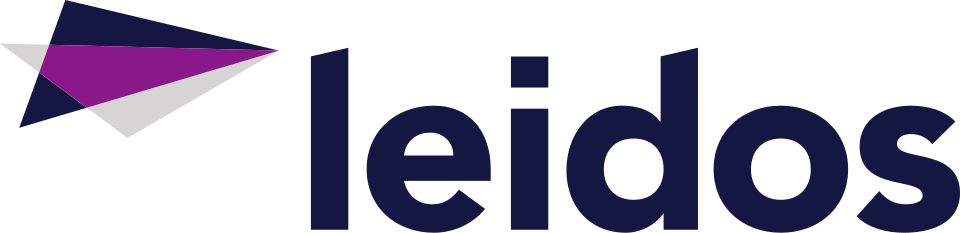

Leidos
Leidos는 미국의 방위·항공·정보기술·생의학 연구 기업으로, 과학·공학·시스템 통합·기술 서비스를 제공하는 회사이다.
최종 업데이트

Leidos는 어떤 브랜드인가
회사의 사업 영역은 방위, 항공, 정보기술, 생의학 연구를 포괄한다. 과학 및 공학 업무와 시스템 통합, 각종 기술 서비스를 수행한다.
미국 국방부, 국토안보부, 정보공동체를 비롯한 정부기관과 일부 상업 시장을 주요 계약 대상으로 한다. 2016년 8월 Lockheed Martin의 Information Systems & Global Solutions 부문과 합병했다.
이 합병을 통해 방위산업에서 최대 규모의 IT 서비스 제공업체가 되었으며, 해당 거래는 방위 부문 통합 과정의 주요 거래 가운데 하나에 해당한다.
Leidos는 어떻게 시작되고 성장했나
John Robert Beyster가 1969년 샌디에이고의 라호야에서 Science Applications Incorporated라는 이름으로 설립했다. 그는 General Atomics에서 받은 주식을 매각한 자금과 초기 직원들이 주식을 사며 마련한 자금을 합쳐 회사를 시작했다.
초기에는 미국 정부의 원자력 및 무기 효과 연구 프로그램 관련 프로젝트에 집중했으며, 사업 확대 과정에서 Science Applications International Corporation으로 사명을 변경했다. 창업자는 회사를 직원 소유 구조로 설계했고, 공동 소유와 책임 및 사업 개발의 자율성을 운영 방식으로 삼았다.
Leidos의 브랜드 아이덴티티는 무엇인가
정부의 국가안보 업무를 중심으로 과학·공학 역량과 시스템 통합 및 정보기술 서비스를 결합한다는 점이 구분되는 특징이다.
Leidos의 대표 제품과 서비스는 무엇인가
과학·공학 연구, 시스템 통합, 기술 지원과 관리 서비스를 핵심 사업으로 한다. 초기에는 원자력과 무기 효과 연구를 수행했으며, 이후 방사선 치료, 순항미사일 개발 지원, 원전 사고와 오염 지역 정화 등의 프로젝트에 참여했다.
항공 분야에서는 Federal Aviation Administration 시험을 통과한 수하물 검사 장비를 설계했다. 국가안보·보건·공학 분야의 정보기술과 정부 대상 시스템 엔지니어링, 기술 지원, 재무 분석, 프로그램 사무소 지원도 사업 구성에 포함한다.
Leidos는 지금 어떤 상태인가
2016년 8월 Lockheed Martin IS&GS와 합병해 방위산업에서 최대 규모의 IT 서비스 제공업체가 되었다. 미국 국방부와 국토안보부, 정보공동체를 포함한 여러 정부기관과 광범위하게 계약한다.
정부 부문 외에도 일부 상업 시장을 대상으로 과학·공학·정보기술 서비스를 제공한다.
Leidos 로고는 어떻게 변해왔나
자주 묻는 질문
Leidos는 어느 나라 브랜드인가요?
Leidos는 미국의 에너지·산업재 브랜드입니다.
Leidos는 언제 설립되었나요?
Leidos는 1969년 설립되었습니다.
Leidos의 브랜드 아이덴티티는 무엇인가요?
정부의 국가안보 업무를 중심으로 과학·공학 역량과 시스템 통합 및 정보기술 서비스를 결합한다는 점이 구분되는 특징이다.
Leidos의 대표 제품은 무엇인가요?
과학·공학 연구, 시스템 통합, 기술 지원과 관리 서비스를 핵심 사업으로 한다.
Leidos는 현재 어떤 상태인가요?
2016년 8월 Lockheed Martin IS&GS와 합병해 방위산업에서 최대 규모의 IT 서비스 제공업체가 되었다.
Leidos의 창업자는 누구인가요?
Leidos의 창업자는 John Robert Beyster입니다(위키데이터 기준).
Leidos의 본사는 어디에 있나요?
Leidos의 본사는 매클레인에 있습니다(위키데이터 기준).
출처와 검증
Leidos 관련 참고: 공식 웹사이트 · 위키데이터 Q502132 · 영어 위키백과. 브랜드명은 한글과 원어를 함께 표기하되 데이터에 없는 표기는 만들지 않습니다. 기원 국가·설립연도는 검수된 정의문에서 확인된 값을 우선하고, 없을 때만 공식 웹사이트 URL이 일치하는 위키데이터 개체의 값을 씁니다. 위키데이터 값은 2026-09-12 기준입니다.